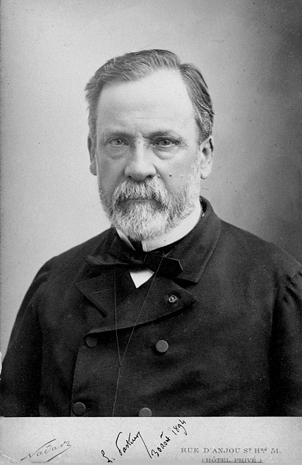

Docteur Louis Pasteur
Pionnier de Microbiologie

L'inventeur du vaccin contre la rage
27 decembre 1822 : Pasteur vient au monde
1848 : Pasteur est nommé professeur de physique>
1854 : Louis Pasteur,devient doyen de l’universitlie Lille
1855 : Pasteur commence ses recherches sur la ferlitation>
1862 : Pasteur est élu à l’Académie des sciences
1865 : Naissance de la méthode de pasteurisation
1880 : Premières études sur la rage
1885 : Pasteur soigne la rage
1888 : Inauguration de l'Institut Pasteur
28 octobre 1895 : Louis Pasteur s’éteint